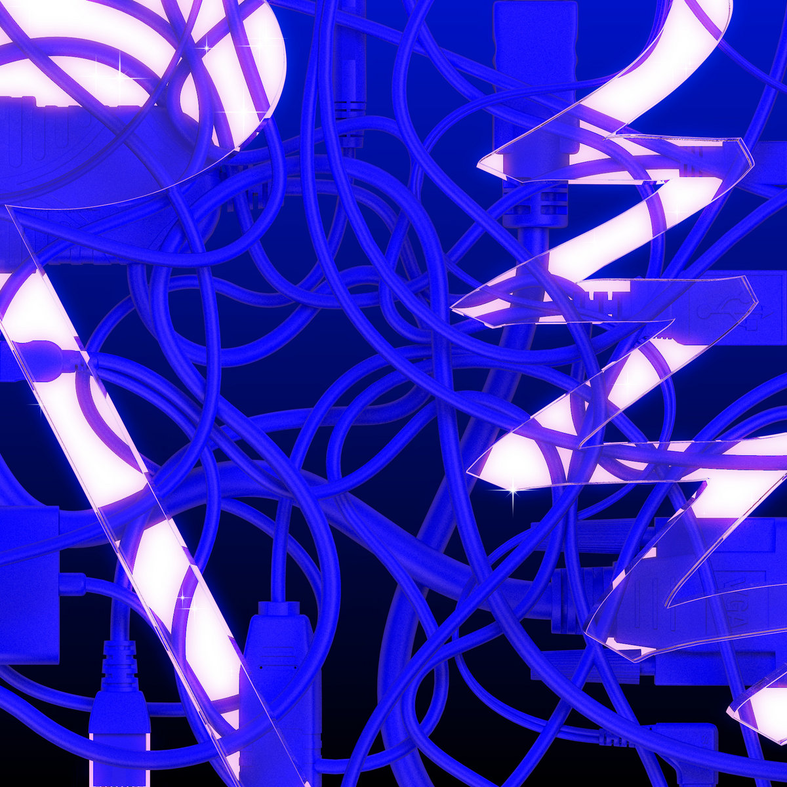
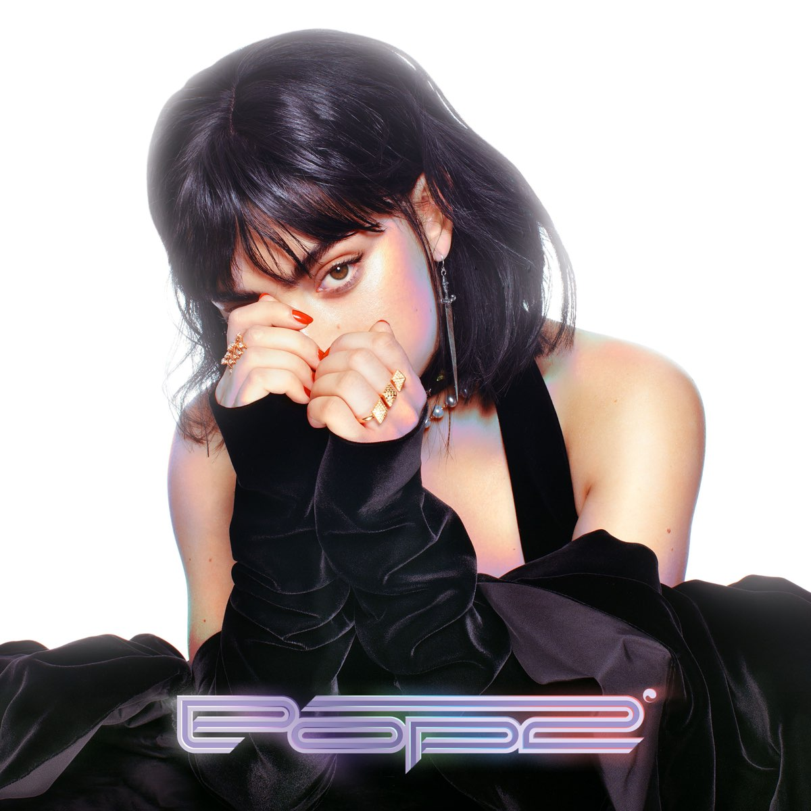
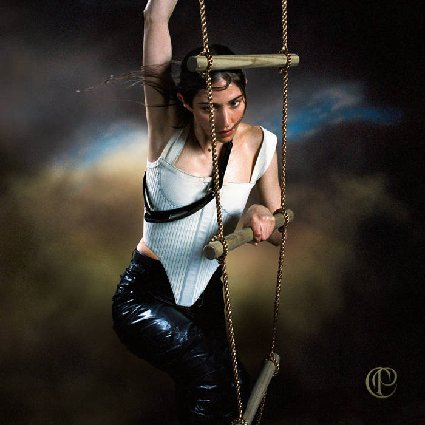

pc music and co.
the birth of a new era in pop music
about
origins: United Kingdom, early 2010s
similar genres associated with: bubblegum bass, art pop, glitch pop, future bass, uk bass, wonky
primary figures: a.g. cook (founder of pc music), hannah diamond, GFOTY, charli xcx, namasenda, danny l harle, caroline polachek, patricia taxxon
history

album: pc music vol.1
artist: pc music roster
released: may 2, 2015
sub-genres: bubblegum bass, dance-pop, glitch pop
descriptors: playful, futuristic, cleam. satirical (?), love, euphoria, plastic shiny
recommended if you like: teeny-bopper magazines, pink blush, irl_moots, product placements, middle school crushes, mary sues
thoughts: maybe in some alternative universe this album would be in those tumblr-era defining moments in girlhood. it reeks of rainbow MLP OCs, sparkly diaries and trading secrets, something that a nickelodeon star would make
fav track: keri baby

album: pop 2
artist: charli xcx
released: december 15, 2017
sub-genres: bubblegum bass, glitch pop, synthpop
descriptors: shiny, glittery, futuristic, energetic, nightclub, love, passionate, ethereal
recommended if you like: late night drives, unicorn skin, UFOs, best friends forever, robots, gel nails, alcohol all over the floor
thoughts: the lifecycle of a relationship in the perspective of an alien understanding human emotion. however, there's something joyous and celebratory about this, and i would say that the features are a vital reason. it's almost like a large group project, everyone mixing and matching styles, and i feel as though that represents the love of internet culture and gayness. easily considered a victory lap in everyone's early career.
fav track: out of my head

album: pang
artist: caroline polachek
released: october 18, 2019
sub-genres: art pop, electropop, ambient pop
descriptors: ethereal, surreal, poetic, lush, deep, atmospheric, talkative, introspective, grand
recommended if you like: greek mythology, adam and eve, reincarnation, solarpunk, biblically accurate angels, sirens and pirates, lucid dreaming, autotune(?)
thoughts: a much more grown up version of hannah diamond, in a literal way, like if the character of hannah diamond grew older and got an ego death and gave a.g. cook some grass and vitamin d. its girlhood but you are a mermaid that accidentally drowned a sailor because you just wanted a friend and you freaked him out too much.
fav track: door
sound
themes
aesthetic
modern day influence
listen here!
sources + read more